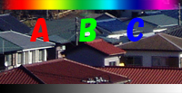
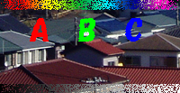
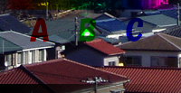
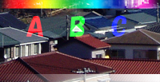
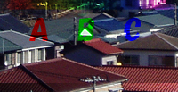
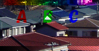
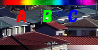
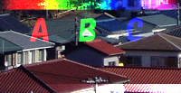
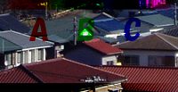

・通常
初期設定のモードです。上の色をそのまま表示します。不透明度を調整すれば、下の画像が透けて見えます。 |
 |
・ディザ合成
不透明度に応じて下の色と上の色をランダムに混合して合成します（左の例は合成色を不透明度＝約50％にしています）。
|
 |
・乗算
下の色と上の色を掛け合わせます。白い部分は透明に、黒い部分はそのまま表示されます。結果色は常に基本色よりも暗くなります。
上のレイヤーが透明フィルムに透明インクでできていると思えば理解しやすいと思います。
|
 |
・スクリーン
乗算の逆の効果を持ちます。下の色と上の色を反転させて掛け合わせます。結果色は常に基本色よりも明るくなります。
|
 |
・オーバーレイ
下の色応じて「乗算」と「スクリーン」を使い分けます。シャドウ部分には暗くする「乗算」、ハイライト部分には明るくする「スクリーン」を適用します。
そのため、下の色が黒い部分は黒に、白い部分は白として合成されます。
|
 |
・ソフトライト
上の色の明度が50％より明るい部分には「覆い焼きカラー」を適用して明るくし、明度が50％より暗い部分には「焼き込みカラー」を適用して暗くします。
|
 |
・ハードライト
上の色の明度が50％より明るい部分には「スクリーン」を適用して明るくし、明度が50％より暗い部分には「乗算」を適用して暗くします。
|
 |
・覆い焼きカラー
各チャンネルの色情報に基づき、下の色を暗くした上で上の色を反映させます。そのため、白を適用した場合、上の色には変化が生じません。
|
 |
・焼き込みカラー
各チャンネルの色情報に基づき、下の色を明るくした上で上の色を反映させます。そのため、黒を適用した場合、上の色には変化が生じません。
|
 |
|